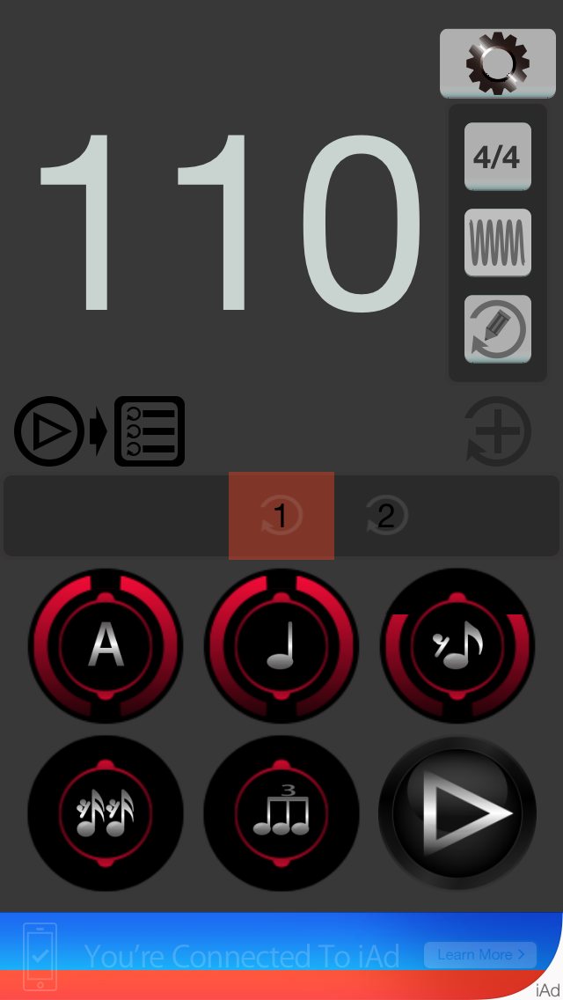
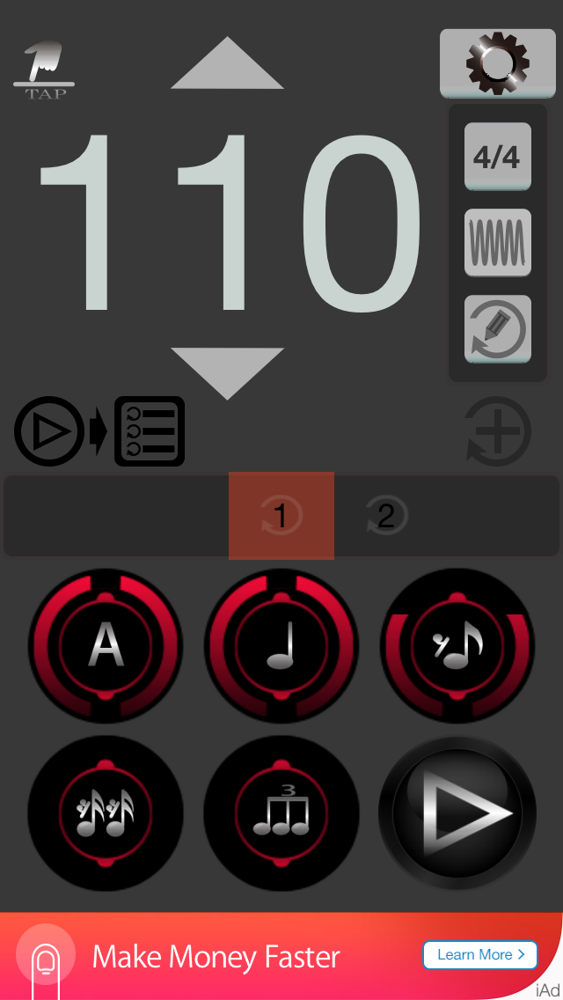

“Rock Click” 一款由搖滾樂"鼓手"設計製作於iPhone App應用程式上的節拍器軟體，除了一般標準鼓手節拍器的功能外，更添加了自動依序撥放節拍的功能。只要在節拍列表中增加與設定次數及其它相關參數，便可開始依序執行及播放。
此外，為了方便綀習歌曲，此軟體更加入了歌曲與節拍同步撥放功能，只要選定歌曲及設定好節拍細節，便可達到如一般專業錄音軟體的合併播放功能。
同時，此軟體也具備了音樂減半速度播放及好用的AB播放功能，如此貼心又方便的設計，讓樂手在綀習歌曲的同時也能輕易的解析細節。
Iphone 6 / Iphone 6 plus/ Iphone 5S / Iphone 5 "主頁面"

